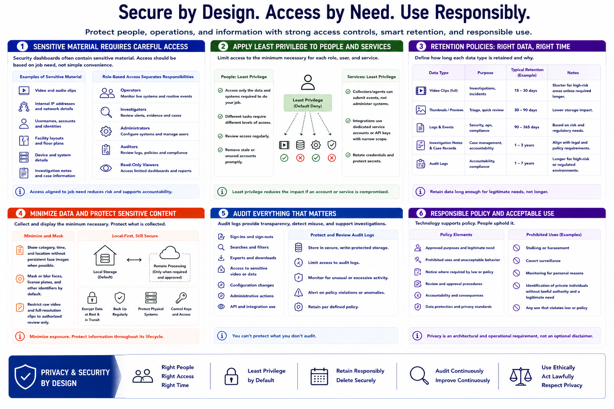

Privacy, Access Control, and Retention
Connecting to LMS... Progress: in progress

Narration
Security dashboards often contain sensitive material: video, internal addresses, usernames, facility layouts, device details, and investigation notes. Access should be based on job need, not simple convenience. Role-based access can separate operators, investigators, administrators, auditors, and read-only viewers.
Apply least privilege to both people and services. A user who reviews endpoint alerts may not need unrestricted video access. A collector that submits events does not need permission to administer the dashboard. Review access regularly and remove stale accounts promptly.
Retention policies define how long logs, clips, thumbnails, notes, and audit records remain available. Different data types may require different periods. Keep data long enough for legitimate security, legal, and operational needs, but do not preserve sensitive material indefinitely without a defined reason.
Minimize or mask data where full detail is unnecessary. A dashboard may display an event category and time without a persistent face image, or restrict raw clips to authorized review. Local-only storage can reduce external disclosure when remote processing is not required, but it still needs encryption, backup, and physical protection as appropriate.
Audit logs should record sign-ins, searches, exports, configuration changes, administrative actions, and access to especially sensitive evidence. Protect those logs from casual alteration and review them for misuse or unexpected access.
Responsible policy defines approved purposes, prohibited monitoring, notice where required, review procedures, and accountability. Do not use the dashboard for stalking, harassment, covert surveillance, or identification of private individuals without lawful authority and a legitimate need. Privacy is an architectural and operational requirement, not an optional disclaimer.